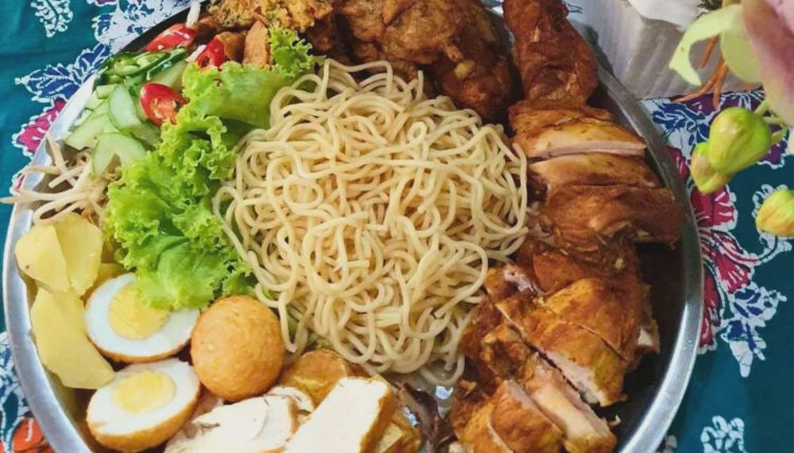

Home
Rojak Ayam

Description
Rojak Ayam is a Malaysian dish that combines fried or grilled chicken pieces with a mix of fresh vegetables, tofu, and sometimes fruits, all tossed in a sweet, spicy, and tangy peanut or rojak sauce. It’s a flavorful fusion of textures—crispy, crunchy, and juicy—often served with rice or eaten on its own as a hearty salad-style dish.
Ingredients
For the chicken:
- 2 chicken thighs or breasts
- 1 tsp turmeric powder
- 1 tsp salt
- ½ tsp ground white pepper
- Oil for frying or grilling
For the Rojak sauce:
- 3 tbsp peanut butter (or crushed roasted peanuts)
- 2 tbsp sweet soy sauce (kicap manis)
- 1 tbsp tamarind juice (or lime juice)
- 1 tsp chili paste (adjust to taste)
- 1 tsp sugar
- Salt to taste
- A bit of warm water to thin the sauce
Other Ingredients (mix-ins):
- 1 cucumber (sliced)
- 1 firm tofu (fried and cut into cubes)
- 1 boiled egg (optional)
- Lettuce or salad greens
- Pineapple chunks (optional for sweetness)
- Bean sprouts (blanched)
Steps
- Prepare the Chicken
- Marinate chicken with turmeric, salt, and pepper
- Fry or grill until golden and cooked through
- Slice into bite-sized pieces
- Make the Rojak Sauce
- Mix peanut butter, sweet soy sauce, tamarind/lime juice, chili paste, sugar, and salt
- Add a bit of warm water and stir until smooth and pourable
- Assemble the Rojak Ayam
- In a large bowl, combine cucumber, tofu, greens, pineapple, bean sprouts, and chicken
- Pour the sauce over and toss gently to coat everything
- Serve
- Plate and top with extra crushed peanuts or fried shallots if desired
- Serve immediately for the best texture
Home